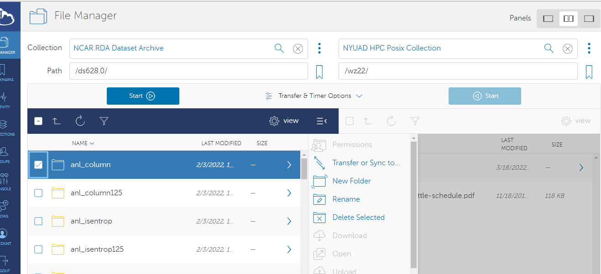

Globus Data Transfer¶
Globus is a service that makes it easy to move, sync, and share large amounts of data. Globus will manage file transfers, monitor performance, retry failures, recover from faults automatically when possible, and report the status of your data transfer. Globus uses [GridFTP] for more reliable and high-performance file transfer, and will queue file transfers to be performed asynchronously in the background.
Globus was developed and is maintained at the University of Chicago and is used extensively at supercomputer centers and major research facilities [Globus Website ].
The NYUAD HPC is also part of the Globus network.
Globus can be used for file transfers between NYUAD HPC and a computing institution with Globus installed.
Important
The Globus Endpoint has ONLY $ARCHIVE mounted. Users can access the same in the Globus portal by specify /NetID. This will correspond to /archive/Netid.
When to use Globus?¶
For transferring small amounts of data, the scp, sftp, and rsync over ssh utilities generally work well and are more widely available. However, if you transfer large data that takes a long time (more than 15 minutes) and happens frequently, or is using an unreliable connection, Globus is recommended. This is because Globus not only transfers data faster but also takes care of disruptions gracefully (e.g., automatically resumes data transfer after temporary network disconnections).
Note
To use Globus, it needs to be available on both source and destination endpoints.
One Time Setup¶
Follow the below steps to connect to the Globus Network.
Note
The below steps need to be followed ONLY the first time you connect to Globus.
Log into NYUAD HPC
In login node, execute the command
globus-keyinit. A sample output is given below.
Note
The above command makes sure that globus DMZ server will be able to login to CNG/Login nodes without password
[wz22@login4 ~]$ globus-keyinit
Generating public/private ed25519 key pair.
Your identification has been saved in /home/wz22/.ssh/globus_ed25519.
Your public key has been saved in /home/wz22/.ssh/globus_ed25519.pub.
The key fingerprint is:
SHA256:zPAwabcdefghiJKLmnOPqrSTuvWxYZabcdeFGHijKLmnopnzG6SlItu0 wz22@globus
The key's randomart image is:
+--[ED25519 256]--+
| ..o . += |
| . o o . ooo+ |
| ++o + .o...o|
| . oOo....o .+|
| oS.... oB|
| .oo . . Bo|
| o +o = . o|
| o o+ . |
| .E.o |
+----[SHA256]-----+
------------------------------------------------------------------------------
To enable automount of /archive for Globus,
please copy Globus ssh-key to HPC Bastion host (NetID pass):
scp -P 4410 ~/.ssh/globus_ed25519 hpc.abudhabi.nyu.edu:~/.ssh/
-------------------------------------------------------------
[wz22@login4 ~]$
Once the above command is executed, it outputs a command to copy the private key to the bastion host. Please copy and execute it in the same shell/terminal and proceed. A sample output is shown below.
[wz22@login4 ~]$ scp -P 4410 ~/.ssh/globus_ed25519 hpc.abudhabi.nyu.edu:~/.ssh/
~~~~~~~~~~~~~~~~~~~~~~~~~~~~~~~~~~~~~~~~~~~~~~~~~~~~~~~~~~~~~~~~~~~~~~~~~~~~~~
WARNING: UNAUTHORIZED PERSONS ........ DO NOT PROCEED
~~~~~~~ ~~~~~~~~~~~~~~~~~~~~ ~~~~~~~~~~~~~~
This computer system is operated by New York University (NYU) and may be
accessed only by authorized users. Authorized users are granted specific,
limited privileges in their use of the system. The data and programs
in this system may not be accessed, copied, modified, or disclosed without
prior approval of NYU. Access and use, or causing access and use, of this
computer system by anyone other than as permitted by NYU are strictly pro-
hibited by NYU and by law and may subject an unauthorized user, including
unauthorized employees, to criminal and civil penalties as well as NYU-
initiated disciplinary proceedings. The use of this system is routinely
monitored and recorded, and anyone accessing this system consents to such
monitoring and recording.
~~~~~~~~~~~~~~~~~~~~~~~~~~~~~~~~~~~~~~~~~~~~~~~~~~~~~~~~~~~~~~~~~~~~~~~~~~~~~
wz22@hpc.abudhabi.nyu.edu's password:
globus_ed25519 100% 399 472.2KB/s 00:00
[wz22@login4 ~]$
Globus Portal¶
In order to login to the Globus Portal, Researchers don’t need to create a new account, instead they can use the
Orginzational Loginoption to connect to the Globus portal using New York University and then (NetId and Password)
Once logged in to the portal, browse for the
NYUAD HPC Posix collection.
You can now Trasnfer or sync data available within the globus network.
The screenshot below is a trasnfer to be initiated between one of the dataset from “NCAR’s Research Data Archive”
to /archive/wz22 of NYUAD HPC.

The Globus organization provides a series of How To documents including a Getting Started Guide that covers gives a quick tour on transferring files.